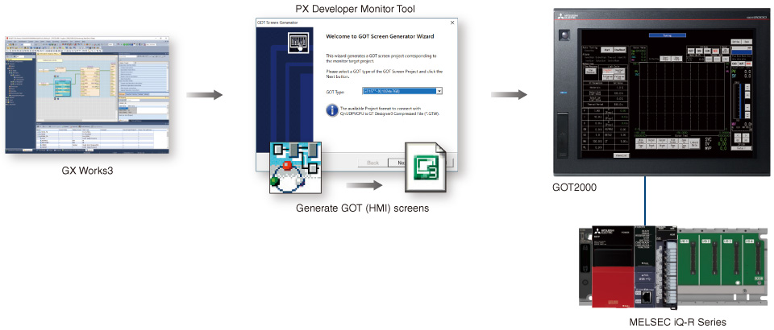
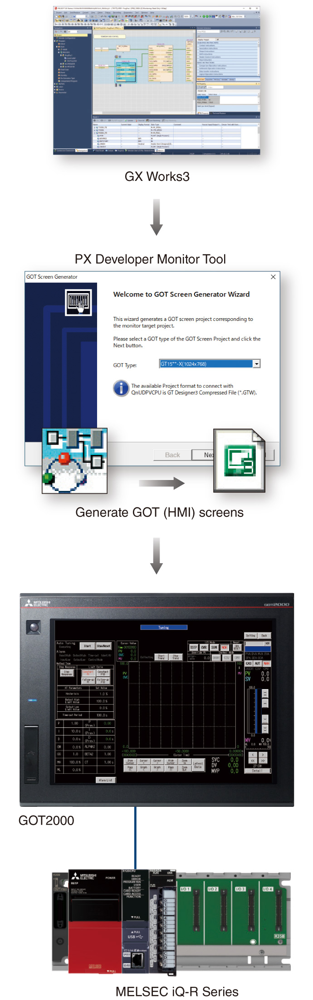

Process Control/Redundant Monitoring solution

Generation of GOT (HMI) screens*1
Easily create GOT2000 process control monitoring screens
- Faceplates and tuning screens for GOT2000 can be automatically generated from GX Works3 projects
- There is no need to set the assigned devices of tag data or create programs for automatically generated screens*2
- *1.For more information on GOT2000,
please refer to “GOT2000 Series Catalog (L(NA)08270ENG)”. - *2.Cannot be used to monitor multiple CPUs.

MELSEC iQ-R Series-compatible CPU modules
| Item | Details |
|---|---|
| Process CPU | R08PCPU, R16PCPU, R32PCPU, R120PCPU |
| SIL2 process CPU | R08PSFCPU-SET, R16PSFCPU-SET, R32PSFCPU-SET, R120PSFCPU-SET |